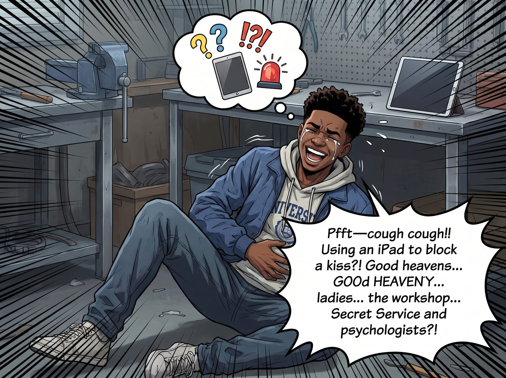
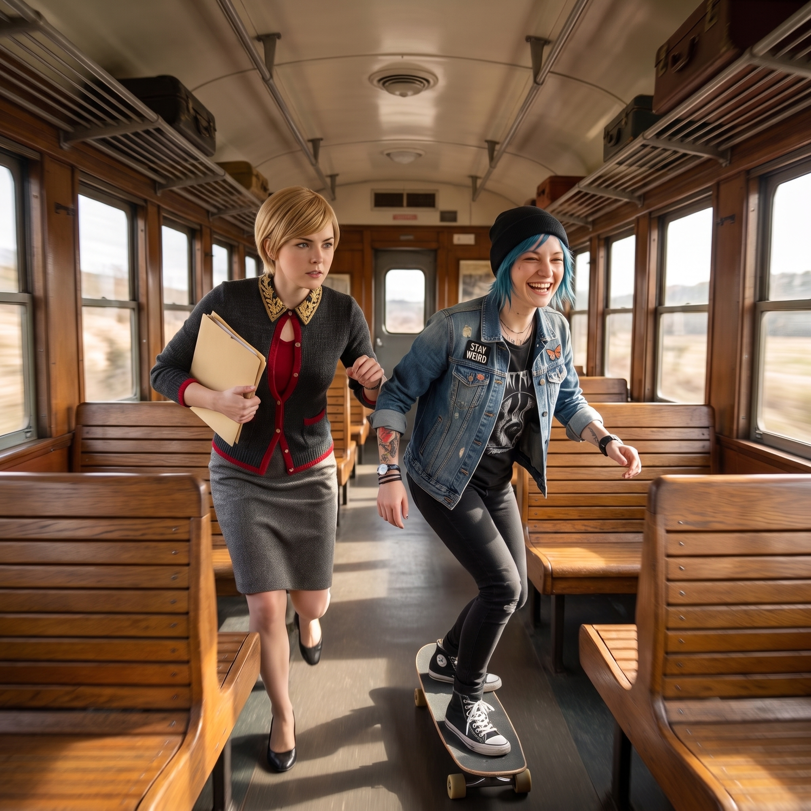

弟弟的週末報到


週六上午九點半，換上大學休閒連帽衫的 Miles 準時推開了二號車廂的滑門。
手裡還提著給姐姐們帶的楓糖核桃派，剛進門就迎來了 Kate 最熱情的「情報共享」。大天使一邊給 Miles 遞上熱茶，一邊毫無保留、甚至帶著幾分天真可愛的語氣，將這週發生的兩大傳奇事件全盤托出：
「Miles 你不知道……週二 Emma 來送外賣時，我們睡得太沉，她差點按下 911 叫救護車！然後昨天 Victoria 剛頒布『法定放空日』，Chloe 就直接撲上去把 Victoria 按在沙發上狂親，Victoria 拿著 iPad 擋得手都酸了呢！」
一、大弟子的狂笑破防與物理硬直
這兩條信息量過於巨大的衝擊，直接讓剛剛在大學接受嚴肅學術薰陶的 Miles 當場大腦死機。
「噗——咳咳咳咳咳！！」Miles 嘴裡的熱茶差點一口噴在剛擦好的金屬導軌上。他整個人扶著工作台的鐵邊緣，笑得肩膀劇烈抖動，最後甚至笑到岔氣，雙膝一軟，直接蹲在地上捂著肚子起不來：「拿、拿 iPad 擋親吻？！還有 911 報警？！天哪……各位姐姐……我就離開了不到五天，工坊已經發展到需要特勤局和心理醫生常駐的地步了嗎？！」
二、名媛的尊嚴核打擊與辦公室大逃殺
坐在角落辦公桌前、正穿著一絲不苟的高定駝色西裝批閱文件的 Victoria，手裡的萬寶龍鋼筆「啪」地一聲在報表上劃出了一道長長的墨痕。
名媛的耳根在一秒內紅透到了極致，金絲眼鏡後面的目光化作了實質性的刀子，直接鎖定了站在茶水台邊無辜眨眼的 Kate 和在滑板上笑得打滾的 Chloe。
「Kate Marsh！！」Victoria 猛地站起身，抓起桌上一本裝訂厚實的《基金會年度資產審計年鑑》，踩著高跟鞋殺氣騰騰地衝了過來：「我不是嚴格命令過妳，這兩件事屬於工坊最高商業機密，永久封存不准向任何人透露嗎？！」
Kate 像隻受驚的小鹿，連忙捧著托盤躲到 Max 身後，露出兩顆毛茸茸的金色碎髮腦袋，小聲委屈地辯解：「可是……Miles 不是外人呀……他是我們的大弟子兼家人……」
「大弟子也不行！！」Victoria 轉向罪魁禍首 Chloe，手中的厚文件夾直接化作名媛專屬戰斧，狠狠朝著 Chloe 的肩膀砸了過去：「還有妳！Price！妳這個街頭暴徒、無神論靈長類動物！要不是妳在沙發上發瘋，我至於連 iPad 屏幕貼膜都被妳的棒棒糖口水腐蝕掉嗎？！」
三、滑板漂移與車廂追逐戰
「哇靠！大股東家暴現場！」
Chloe 哪裡肯乖乖挨打，她雙腿一曲，踩著帶輪滑板在兩米寬的中央通道上來了一個極其絲滑的漂移甩尾，單手扶著工具牆，笑得眼淚狂飆：「Miles！看見沒！這就是惱羞成怒的名媛！她昨天被老娘親的時候明明連反抗的力氣都沒了，今天就在徒弟面前裝鐵血女總裁！長官，掩護老娘！」
Max 抱著相機笑得在地上打滾，一邊調整光圈一邊充當人肉路障，嘴裡還在煽風點火：「Victoria 冷靜！妳的西裝下擺跑亂了！Miles 快看這個構圖，這就是現代藝術裡的『神聖審判與混亂邪惡的動態碰撞』！」
Miles 蹲在地上，看著平日裡高不可攀的 Victoria 拿著文件夾追著踩滑板的 Chloe 在車廂裡繞圈，Kate 在後面提著精油噴霧試圖給所有人「降溫」，整個人笑到臉部肌肉徹底抽筋，只能舉起雙手投降：「停……停一下！姐姐們！我錯了！我今天保證把所有車床導軌擦三遍，求你們別再逗我笑了，我的腹肌真的要裂開了……」
四、長木桌上的全新平衡
十分鐘後，一場世紀追逐戰終於在全員氣喘吁吁中宣告停火。
Victoria 氣息微喘地坐在藤椅上，額前的一縷金髮有些凌亂，正拿著濕紙巾優雅地擦拭著手腕，冷冷地瞪著對面三個排排坐、低頭吃核桃派的「問題兒童」。
Miles 乖巧地把切得最完美的一塊核桃派推到 Victoria 面前，並奉上一杯熱氣騰騰的大吉嶺紅茶，眼神無比真誠地打圓場：「Victoria 姐，其實我們系裡的教授看過工坊的放空日制度後，都說這是全波特蘭最具前瞻性的人文主義管理呢……真的。」
Victoria 挑了挑眉，看著大學生認真討好的模樣，緊繃的嘴角終於微微動了動，端起茶杯抿了一口，傲嬌地輕哼了一聲：「算你這幾天在大學裡學會了一點體面的說話藝術。」
點唱機在角落自動切換成了輕快的爵士節奏，二號車廂的大門在晨風中敞開。
看著身邊大口嚼著派的 Chloe、認真挑選抓拍照片的 Max、笑瞇瞇添茶的 Kate，以及滿眼崇拜的名媛與弟弟，這節由火花、笑罵與深厚羈絆鑄造的鋼鐵車廂，在週末的陽光下，再次回歸了最溫暖、最吵鬧的日常。